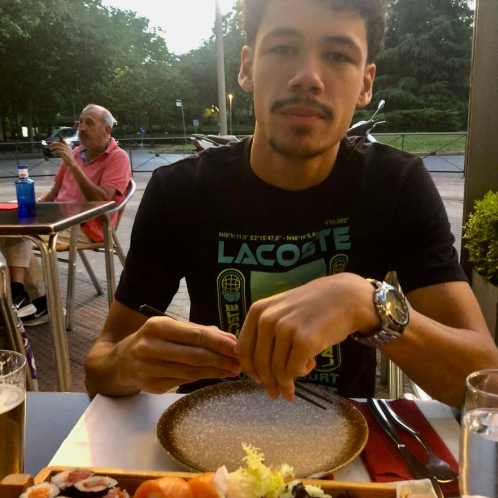
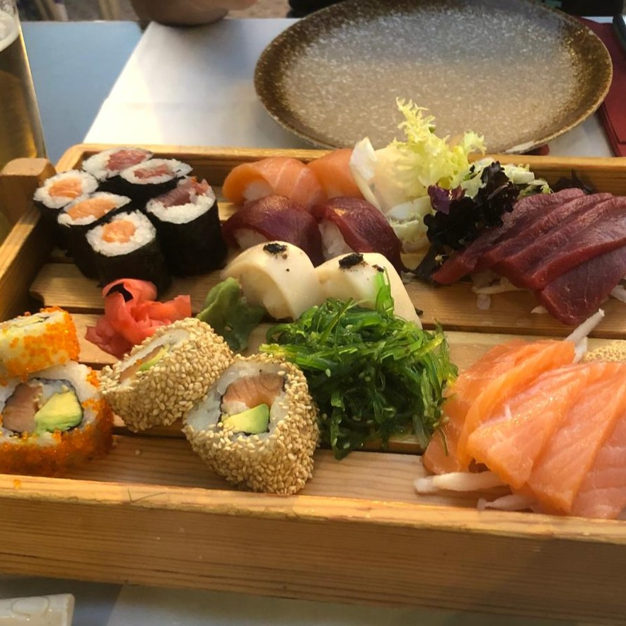
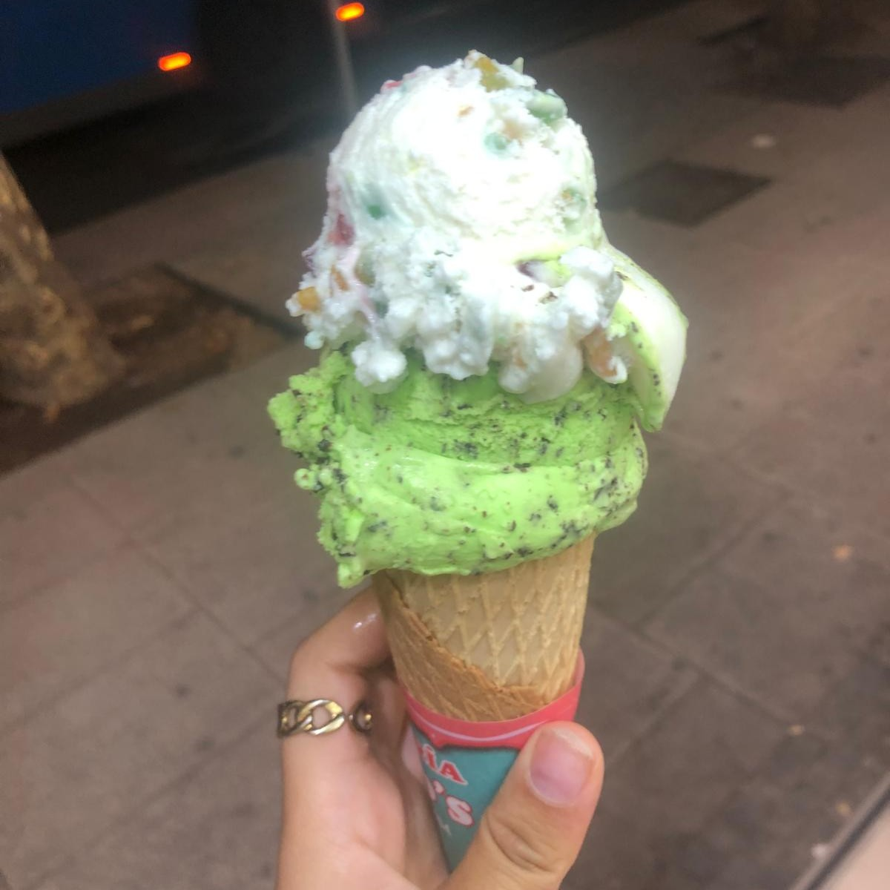
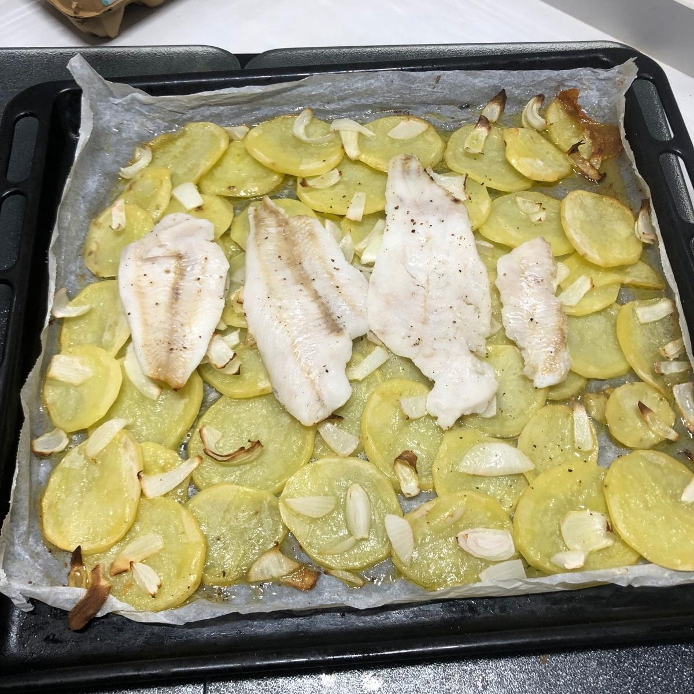

Día 06 · Adviento 2026
Mis platos navideños favoritos
Todos estos platos son mis favoritos, y algún día los comeremos juntitos.
Pareja que come
unida, permanece
unida
Lo que más nos gusta El sushi, si por mi fuese lo comía todos los días, jajajaj. Me encanta ir a comer contigo sushi.




HELADOOOOO Aunque no te guste el helado de menta con chocolate y el de tuti-fruti. Yo te sigo queriendo igual.

Nuestra primera cenita Fué la primera vez que cocinaba pescado, pero me lo pasé muy bien hablando contigo mientras se hacía en el horno.

Un imprescindible No podian faltar las roscas, ya sean dulces o saladas. Vaya tripotera me pegue ese día eh jajajaj.

De nuestras primeras salidas. Una buena horchatita fresquita.